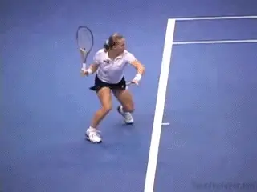
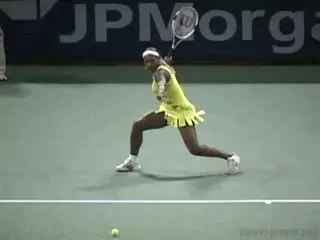
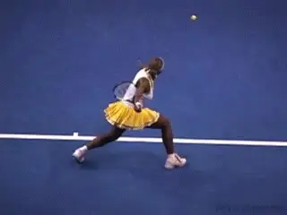
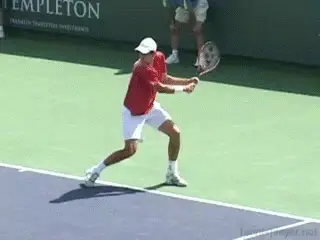

Contact Moves: The Pivot Moves¶
David Bailey

Pivot Moves: players keep one or both feet on the ground.
The Contact Move is a concept I created that finally allows players and coaches to make sense of the complex and at times bewildering combinations of steps and footwork patterns at the highest levels of the game.
These include the out steps, the steps to the ball and the hitting stances, the movement of the feet and legs during the hit, the balance moves after the hit, and also, the recovery steps.
There are almost 20 different Contact Moves in pro tennis. They fall into 3 general categories. These are: Aggressive, Neutral and Defensive. We've previously looked at the Aggressive Contact Moves, and also, the first series of neutral moves, called the Spin Moves. (link.)
Now let's continue our analysis by looking a second series of neutral moves, called the Pivot Moves. These are Contact Moves in which players keep one or both feet on the ground. Like the Spin Moves, Pivot Moves are used to stay in rallies and/or neutralize fast, deep shots. In some circumstances they also give players the chance to counterattack.

The Two Foot Pivot: both feet on the court, rotating after the contact.
Players use Pivot Moves on relatively low, hard-hit balls, and also, when they are hitting half volleys or hitting the ball on the rise. Typically, this is when they are around the baseline and are forced at least somewhat by time.
With the amount of body rotation in the swings in the modern game, pivot moves are critical to allow the players to flow through their strokes when they strike the ball with one or two feet on the ground.
Two Foot Pivot
The Two Foot Pivot is used on the forehand and the two-handed backhand, and is hit from an open or semi-open stance.
Often players use the Two Foot Pivot when the ball is hit directly at them. [In this case the preparation or the turn move can be a small out step or simply a turn with both feet turning sideways from the split step.] [On these balls, the shot can be hit with an extreme open stance, as there is usually not time to further adjust the feet.]
As the player swings, both feet keep in contact with the court, but pivot or rotate on the court surface. This rotation corresponds to the rotation of the body.

Pivot moves are essential with the increases in body rotation in the modern game.
In the modern game the rear or hitting shoulder often comes around so that it is facing toward the opponent at the completion of the follow-through. The Two Foot Pivot allows the player to rotate the body fully through the shot without leaving the court surface. Rather than block the natural movement of the torso, the feet pivot, allowing the player to hit with power and also spin. It may also help prevent injury.
The feet can pivot about 90 degrees up to a full 180 degrees, going from pointing at one sideline to pointing at the other. If the feet did not pivot in this fashion, it would put stress on the joints as the torso twisted against the legs. Players who don't pivot through these shots are not only blocking their natural power, they are possibly increasing the risk of injuries in the knees, hips, and or ankles.
When using the two-foot pivot the player stays low and keeps the angles in the legs through the shot. In the set up, the knees are bent at a 45 degree angle or more. During the swing, the legs uncoil and partially straighten. But during the follow-through the player drops the knees down again for balance.
One Foot Pivot
Typically, you see the Two Foot Pivot in the women's game on both the forehand and backhand side. This is because the ball is not hit with as much as spin and is not as high bouncing, compared to the men's game. In the men's game, the Two Foot Pivot is rarer, and the One Foot Pivot is much more common.
The One Foot Pivot: the outside foot stays on the court, rotating after contact.
When players use the One Foot Pivot, they are again dealing with hard hit balls near the baseline and working to stay in rallies and/or counterattack off the ground. But typically, the ball is coming up higher off the court due to the arcing trajectory of the shots and heavier topspin. The contact height on these balls makes it difficult to keep both feet on the ground but is not yet high enough that the players must leave the court entirely.
On these balls, the players pivot on the outside foot, but raise the opposite leg and the opposite foot upwards into the air as they rotate through the shot. This allows players to create a higher contact point without going completely airborne.
The One Foot Pivot is also hit with an open stance. Like the Two Foot Pivot, the stance can be quite extreme. But it is commonly semi-open. As the player starts the forward swing, the left or opposite foot comes off the court with the knee bend reaching 45 degrees.
The timing of the pivot is very important. The pivot move, or the rotation or the outside foot, starts after the contact, and moves in concert with the rotation of the shoulders and hips. Again, depending on the ball, the feet can pivot until they face the net, or continue further until they point at the opposite sideline.

Players sometimes use a One Foot Pivot when they hit the two-hander open stance.
When the player goes down the line with the One Foot Pivot, the push off for the recovery is usually with the outside foot back toward the middle. When going crosscourt, however, the front foot will continue to rotate and land slightly further back in the court. Now the first recovery step is a push back to the middle with this foot.
Two-Handed Backhand
Although it is more much more common on the forehand, you will also see the One Foot Pivot used on the two-handed backhand. This can happen when players hit open stance. Again, it's typically when the ball is hit hard, deep and not especially high.
The sequence is similar to the forehand. The player sets up in an open stance. As the swing starts, the player lifts the front leg off the court, bending at the knee.
As with the forehand, this allows the player to raise the contact point somewhat without having to leave the court completely. The rear foot then pivots through the shot after the contact, corresponding to the rotation of the shoulders and hips.
Less body rotation on the two-hander means less rotation of the pivot foot.
Because the amount of torso rotation on the two-hander is less on the forward swing compared to the forehand, the rotation of the outside foot is usually also less. Typically, the outside foot will rotate 90 degrees, or until it points forward at the net.
Depending on where the shot is hit, the recovery steps can begin with a push from either foot back toward the middle. Typically, this push will be with the outside foot if the player has hit down the line. On a crosscourt, however the front foot will often land further from the net as the player rotates through the shot. In this case, the front foot begins the recovery sequence with the push back toward the middle.
So that's it for the Pivot Moves! Stay tuned for the next article which will start our analysis of the Defensive Contact Moves.
Video demonstration — the original video for this article was hosted on TennisPlayer.net.
David Bailey is a native Australian who has spent 15 years studying tennis at the professional level. He has developed a new language for one of the most complex and misunderstood aspects of the game, footwork and court movement. David has worked with world class players and coaches, national tennis associations and top academies, and has presented at coaching seminars around the world. His teaching system, the Bailey Method, has become a regular part of the coaching curriculum at the Nick Bollettierri Tennis Academy, where it is personally endorsed by Nick
Visit David's Website! [!]
To Contact David directly [!]